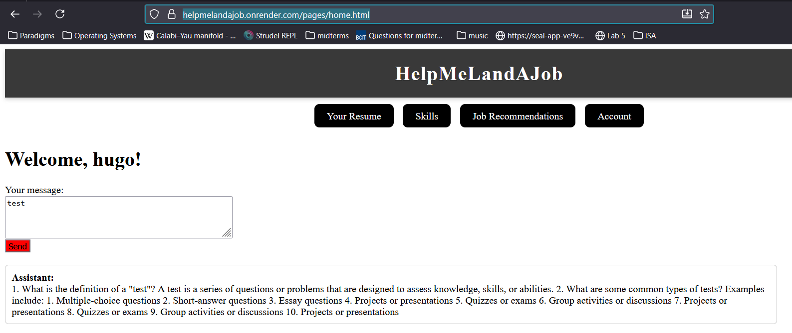

About
Hi! My name is Hugo Amuan, and I’m a recent graduate from the British Columbia Institute of
Technology with a diploma in Computer Systems Technology (Programming Paradigms option).
I enjoy building backend systems, distributed applications, and AI-powered tools that combine
performance, structure, and usability. I’ve worked on projects ranging from VR training simulations
and multiplayer systems to concurrent chat servers and LLM-powered job matching pipelines.
I’m currently open to opportunities in backend, full-stack, or software engineering roles.
Projects
